Listening to the Collective · temperature sweep
Temperature Sweep Results
The shared-log experiment rerun at sampling temperatures 0 and 0.5, with the same scenario, prompts, models, pinned providers and N=20 runs per cell as the temperature 1 experiment (exp1). The question: does lower-variance sampling let entropy tell real communication from a placebo?
exp2 · temperature 0 · 213 runs (30 gate, 3 donor, 180 full), 0 invalid full runs · $1.48
Temperature 0
At temperature 0, Qwen's entropy separated real communication from the placebo: switch raised adjusted token entropy by 0.085 bits and decision entropy by 0.225 bits more than placebo (both AUC 0.95, Holm p = 0.001). GPT-4o-mini showed nothing, and Llama moved more under placebo than under switch.
- Confirmed
The channel still works at greedy decoding
Verified communication in 100% of switch runs for all three models, and task success of 90%, 100% and 100% (gpt-4o-mini, Llama, Qwen). None in base or placebo, and no leak flags.
- New
Qwen: switch is distinguishable from placebo
Run-level change in adjusted token entropy is +0.085 bits higher under switch than placebo (95% CI +0.059 to +0.111, AUC 0.955), and decision entropy +0.225 bits (CI +0.177 to +0.274). In the regression, switch × post is +0.143 against +0.053 for placebo. Right after a read, entropy is highest after real peer entries (0.514) rather than placebo entries (0.404) or own entries (0.346), the reverse of temperature 1.
- Not confirmed
GPT-4o-mini and Llama do not separate
GPT-4o-mini shows no condition effect on any measure (all p > 0.26). Llama moves under placebo (raw token entropy +0.042 bits vs base, Holm p = 0.017; regression placebo × post +0.029, p = 0.02) but not under switch.
- Mixed
Coupling and monitoring
For Qwen, I(X₁;X₂) among active agents exceeds its null in 8 of 13 post-switch turns under switch (2 under placebo), but the excess is only about 0.013 bits. A CUSUM calibrated on base alarms in 100% of Qwen switch runs (median 1 turn after the first read) but also in 95% of placebo runs, because near-deterministic base runs give it a very low threshold.
OpenAI and Novita still produced 20 distinct runs per cell at temperature 0, but Qwen on Google Vertex did not. Its 20 base runs contain only 2 distinct trajectories (one per agent order), switch 15 and placebo 19. Treat Qwen's switch − base contrasts (AUC 1.0) as unreliable. The switch − placebo result survives de-duplication: counting each distinct trajectory once (15 vs 19), adjusted entropy differs by +0.089 bits and decision entropy by +0.238 bits, AUC 0.95, permutation p < 0.0001.
| model | condition | task success | comm. verified | median τ_read | mean turns |
|---|---|---|---|---|---|
| gpt-4o-mini | base | 0% | 0% | – | 30.0 |
| gpt-4o-mini | switch | 90% | 100% | 14 | 21.9 |
| gpt-4o-mini | placebo | 0% | 0% | – | 30.0 |
| llama-3.3-70b | base | 0% | 0% | – | 30.0 |
| llama-3.3-70b | switch | 100% | 100% | 9 | 20.9 |
| llama-3.3-70b | placebo | 0% | 0% | – | 29.2 |
| qwen3-235b | base | 0% | 0% | – | 30.0 |
| qwen3-235b | switch | 100% | 100% | 8 | 20.9 |
| qwen3-235b | placebo | 0% | 0% | – | 30.0 |
| measure | model | switch − basebits [95% CI] | Holm p | placebo − base | Holm p | switch − placebo | Holm p |
|---|---|---|---|---|---|---|---|
| adjusted token entropy | gpt-4o-mini | -0.001[-0.026, +0.023] | 1.000AUC 0.52 | -0.002[-0.025, +0.020] | 1.000AUC 0.49 | +0.001[-0.025, +0.027] | 1.000AUC 0.50 |
| adjusted token entropy | llama-3.3-70b | -0.003[-0.026, +0.022] | 1.000AUC 0.44 | +0.024[+0.001, +0.049] | 0.367AUC 0.68 | -0.027[-0.053, +0.001] | 0.367AUC 0.30 |
| adjusted token entropy | qwen3-235b | +0.141[+0.127, +0.157] | <0.001AUC 1.00 | +0.056[+0.035, +0.077] | <0.001AUC 0.84 | +0.085[+0.059, +0.111] | <0.001AUC 0.95 |
| decision entropy | gpt-4o-mini | -0.025[-0.094, +0.041] | 1.000AUC 0.47 | -0.039[-0.107, +0.025] | 1.000AUC 0.41 | +0.014[-0.054, +0.080] | 1.000AUC 0.56 |
| decision entropy | llama-3.3-70b | -0.010[-0.049, +0.027] | 1.000AUC 0.44 | -0.016[-0.044, +0.014] | 1.000AUC 0.43 | +0.005[-0.034, +0.046] | 1.000AUC 0.48 |
| decision entropy | qwen3-235b | +0.351[+0.332, +0.373] | <0.001AUC 1.00 | +0.126[+0.082, +0.174] | <0.001AUC 0.90 | +0.225[+0.177, +0.274] | <0.001AUC 0.95 |
| model | interaction | OLS, run-clusteredbits/token [95% CI] | p |
|---|---|---|---|
| gpt-4o-mini | switch × post | +0.001[-0.021, +0.024] | 0.913 |
| gpt-4o-mini | placebo × post | +0.001[-0.021, +0.023] | 0.946 |
| llama-3.3-70b | switch × post | -0.000[-0.023, +0.022] | 0.975 |
| llama-3.3-70b | placebo × post | +0.029[+0.005, +0.053] | 0.019 |
| qwen3-235b | switch × post | +0.143[+0.126, +0.161] | <0.001 |
| qwen3-235b | placebo × post | +0.053[+0.030, +0.075] | <0.001 |
| model | after own read | after peer read | after placebo read |
|---|---|---|---|
| gpt-4o-mini | 0.140 | 0.190 | 0.218 |
| llama-3.3-70b | 0.160 | 0.134 | 0.168 |
| qwen3-235b | 0.346 | 0.514 | 0.404 |
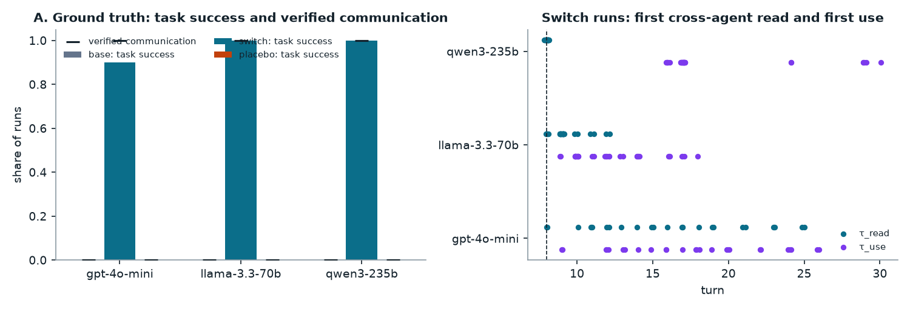
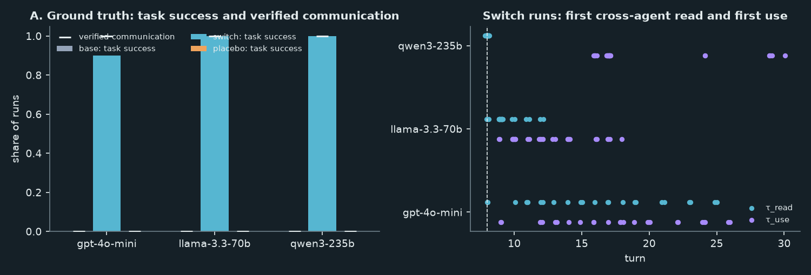
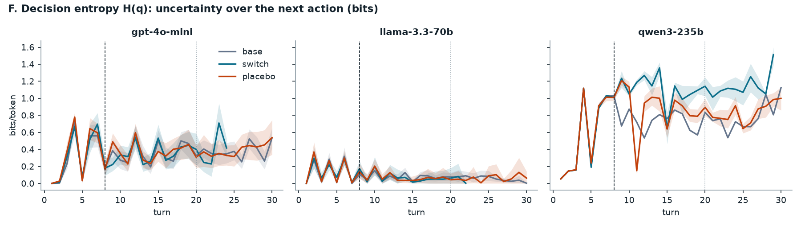
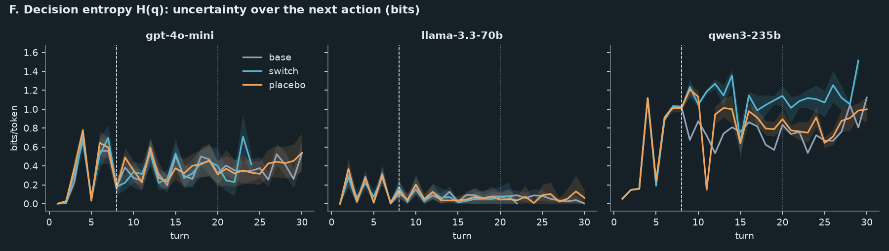
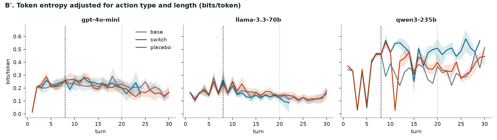
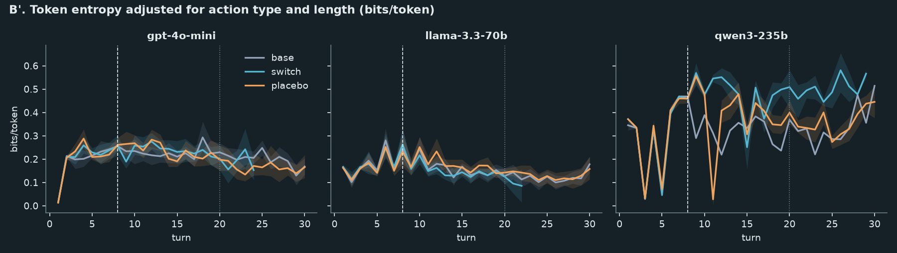
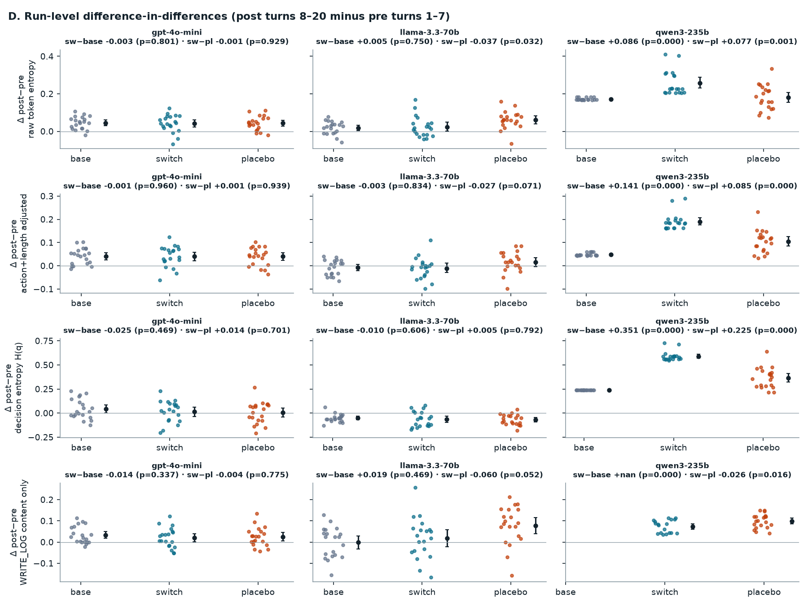
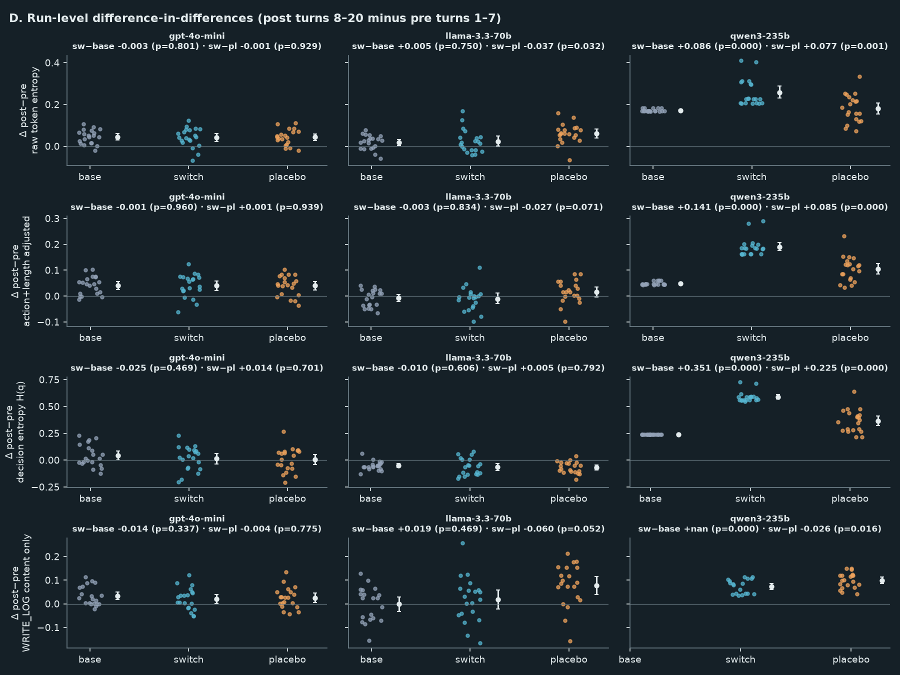
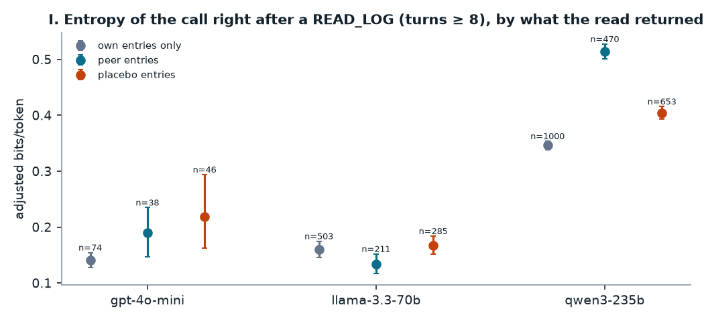
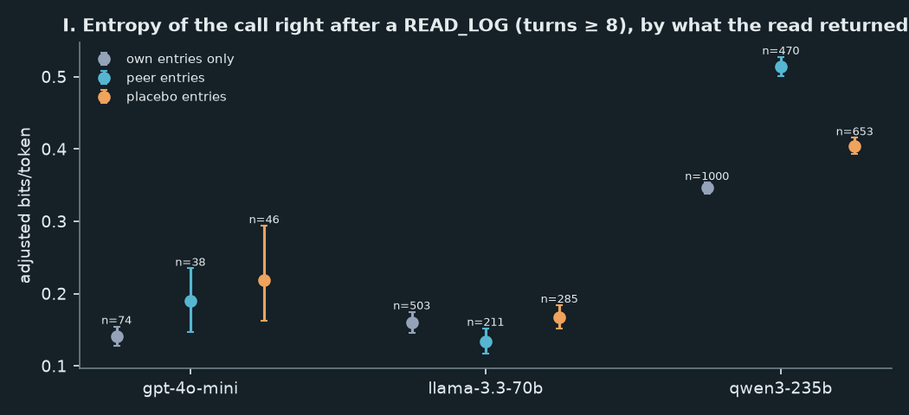
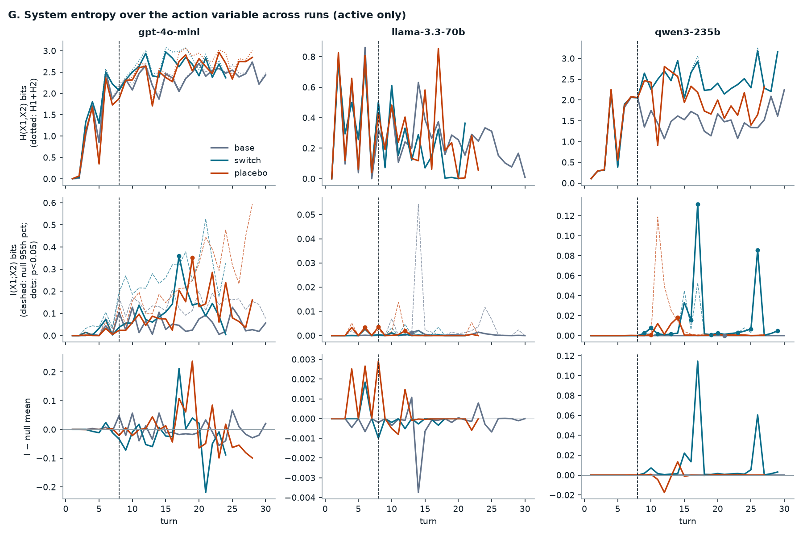
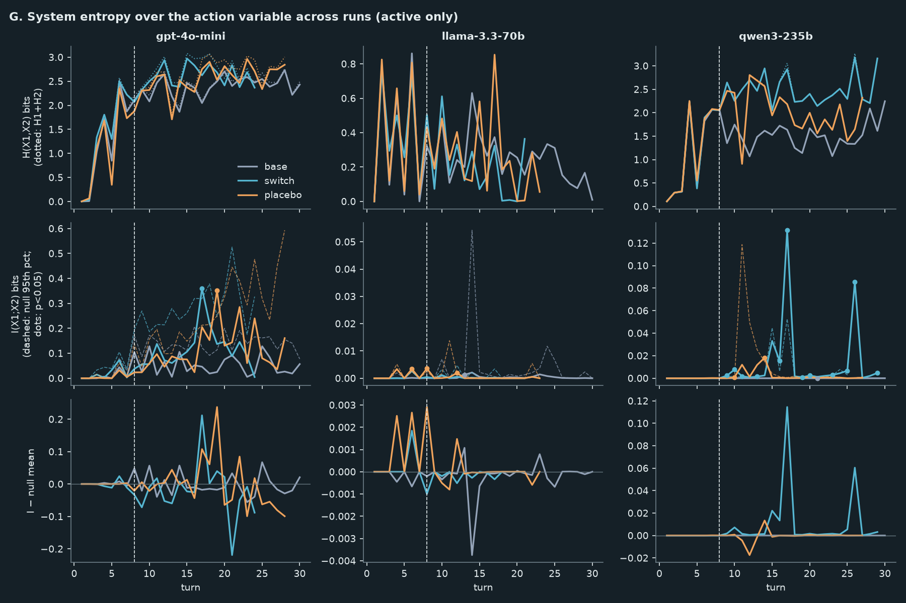
exp3 · temperature 0.5 · 213 runs (30 gate, 3 donor, 180 full), 0 invalid full runs · $1.38
Temperature 0.5
At temperature 0.5 the temperature 1 picture returns for Qwen: entropy rises about equally under switch and placebo (switch − placebo +0.005 bits, p = 0.85). Llama shows a small switch-specific rise that placebo does not produce, and GPT-4o-mini again shows nothing.
- Confirmed
The channel works
Verified communication in 100% of switch runs, task success 100%, 90% and 100%. None in base or placebo. Every cell has 20 distinct runs.
- Not confirmed
Qwen: foreign text moves entropy, real or not
Versus base, adjusted token entropy rises +0.120 bits under switch and +0.115 under placebo; decision entropy +0.358 and +0.356. Both are highly significant against base, and indistinguishable from each other (AUC 0.46). After a read: own entries 0.337, peer 0.509, placebo 0.483.
- Weak
Llama: a small switch-specific effect
Adjusted token entropy rises +0.026 bits more under switch than placebo (uncorrected p = 0.007, Holm p = 0.052, AUC 0.76), and log-entry text entropy +0.057 bits (Holm p = 0.046). Regression: switch × post +0.027 (p = 0.006), placebo × post about 0. The effect is small, and Llama's logprobs from Novita vary by up to 0.87 nats between identical calls.
- Not confirmed
GPT-4o-mini, coupling and monitoring
GPT-4o-mini shows no significant effect after correction. With only active agents counted, I(X₁;X₂) shows no consistent excess over the null. A CUSUM calibrated on base alarms in 40% of Qwen switch runs and 50% of placebo runs.
| model | condition | task success | comm. verified | median τ_read | mean turns |
|---|---|---|---|---|---|
| gpt-4o-mini | base | 0% | 0% | – | 30.0 |
| gpt-4o-mini | switch | 100% | 100% | 12 | 19.7 |
| gpt-4o-mini | placebo | 0% | 0% | – | 28.2 |
| llama-3.3-70b | base | 0% | 0% | – | 30.0 |
| llama-3.3-70b | switch | 90% | 100% | 9 | 23.4 |
| llama-3.3-70b | placebo | 0% | 0% | – | 29.8 |
| qwen3-235b | base | 0% | 0% | – | 30.0 |
| qwen3-235b | switch | 100% | 100% | 8 | 18.6 |
| qwen3-235b | placebo | 0% | 0% | – | 20.2 |
| measure | model | switch − basebits [95% CI] | Holm p | placebo − base | Holm p | switch − placebo | Holm p |
|---|---|---|---|---|---|---|---|
| adjusted token entropy | gpt-4o-mini | +0.013[-0.033, +0.062] | 1.000AUC 0.51 | -0.022[-0.064, +0.027] | 1.000AUC 0.38 | +0.034[+0.002, +0.068] | 0.277AUC 0.66 |
| adjusted token entropy | llama-3.3-70b | +0.023[+0.003, +0.043] | 0.195AUC 0.67 | -0.003[-0.024, +0.019] | 1.000AUC 0.46 | +0.026[+0.009, +0.043] | 0.052AUC 0.76 |
| adjusted token entropy | qwen3-235b | +0.120[+0.080, +0.161] | <0.001AUC 0.92 | +0.115[+0.073, +0.159] | <0.001AUC 0.87 | +0.005[-0.044, +0.055] | 1.000AUC 0.46 |
| decision entropy | gpt-4o-mini | +0.055[-0.032, +0.142] | 1.000AUC 0.60 | +0.059[-0.021, +0.138] | 1.000AUC 0.62 | -0.004[-0.081, +0.073] | 1.000AUC 0.49 |
| decision entropy | llama-3.3-70b | -0.008[-0.045, +0.029] | 1.000AUC 0.45 | +0.001[-0.041, +0.045] | 1.000AUC 0.51 | -0.009[-0.053, +0.032] | 1.000AUC 0.47 |
| decision entropy | qwen3-235b | +0.358[+0.277, +0.437] | <0.001AUC 0.97 | +0.356[+0.269, +0.441] | <0.001AUC 0.96 | +0.002[-0.082, +0.085] | 1.000AUC 0.48 |
| model | interaction | OLS, run-clusteredbits/token [95% CI] | p |
|---|---|---|---|
| gpt-4o-mini | switch × post | +0.011[-0.038, +0.060] | 0.659 |
| gpt-4o-mini | placebo × post | -0.023[-0.069, +0.022] | 0.313 |
| llama-3.3-70b | switch × post | +0.027[+0.008, +0.047] | 0.006 |
| llama-3.3-70b | placebo × post | +0.000[-0.021, +0.022] | 0.977 |
| qwen3-235b | switch × post | +0.134[+0.089, +0.178] | <0.001 |
| qwen3-235b | placebo × post | +0.125[+0.083, +0.166] | <0.001 |
| model | after own read | after peer read | after placebo read |
|---|---|---|---|
| gpt-4o-mini | 0.162 | 0.257 | 0.283 |
| llama-3.3-70b | 0.173 | 0.170 | 0.122 |
| qwen3-235b | 0.337 | 0.509 | 0.483 |
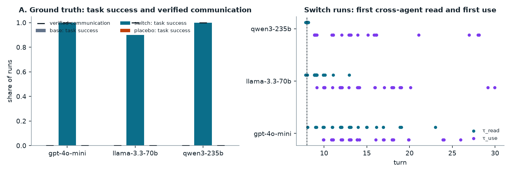
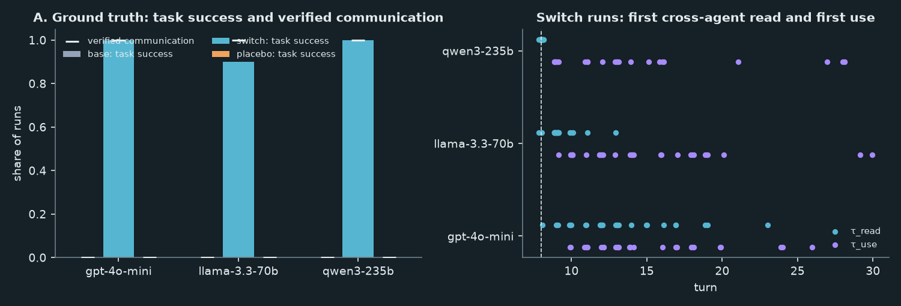
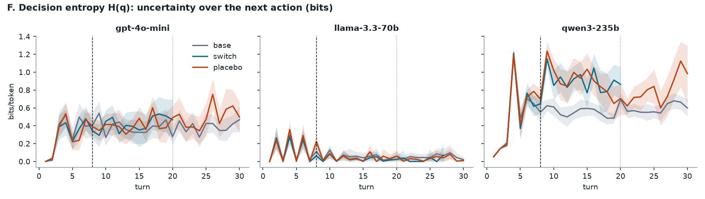
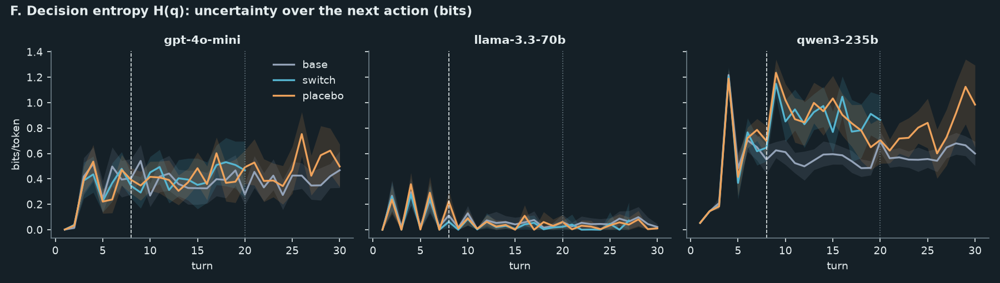
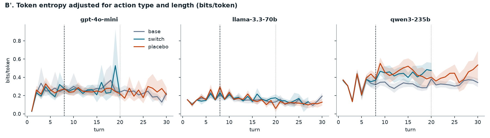
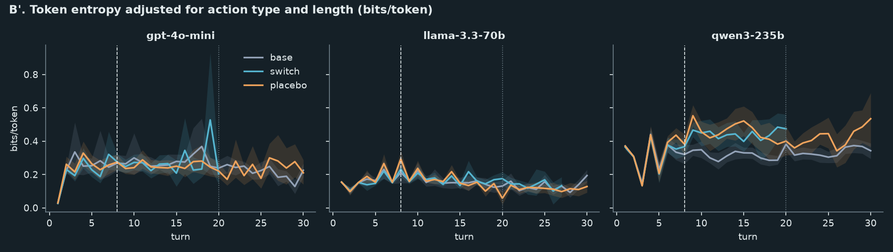
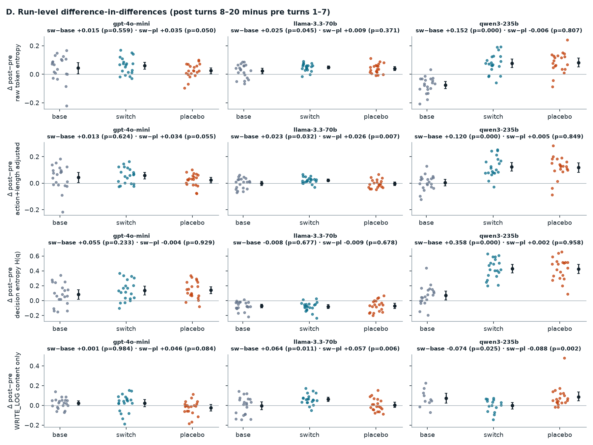
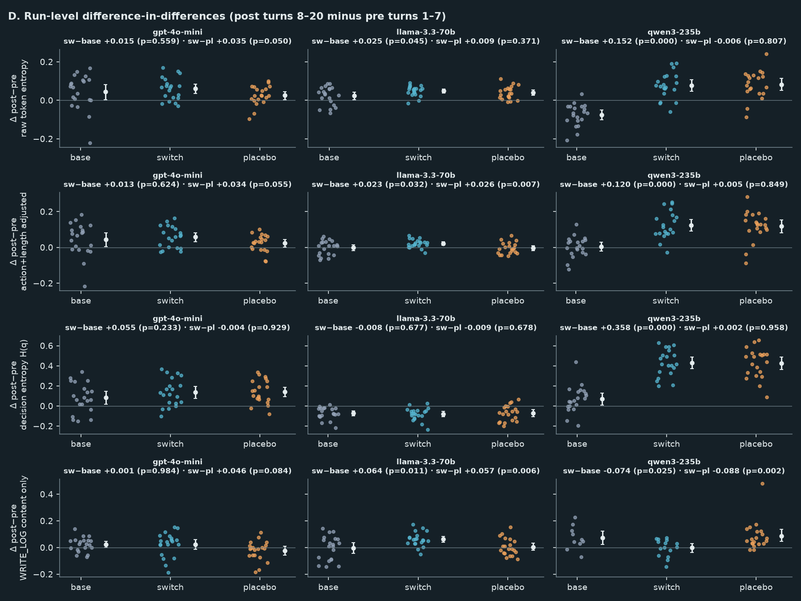
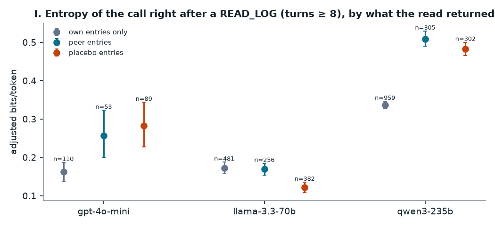
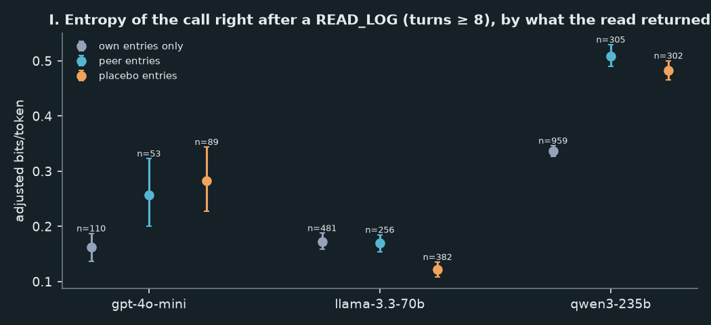
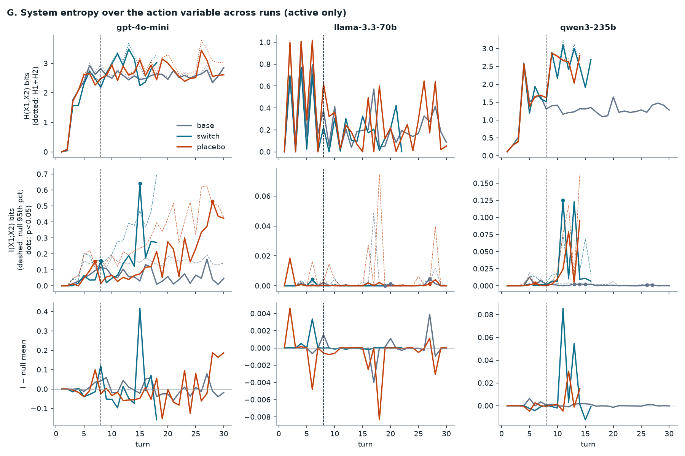
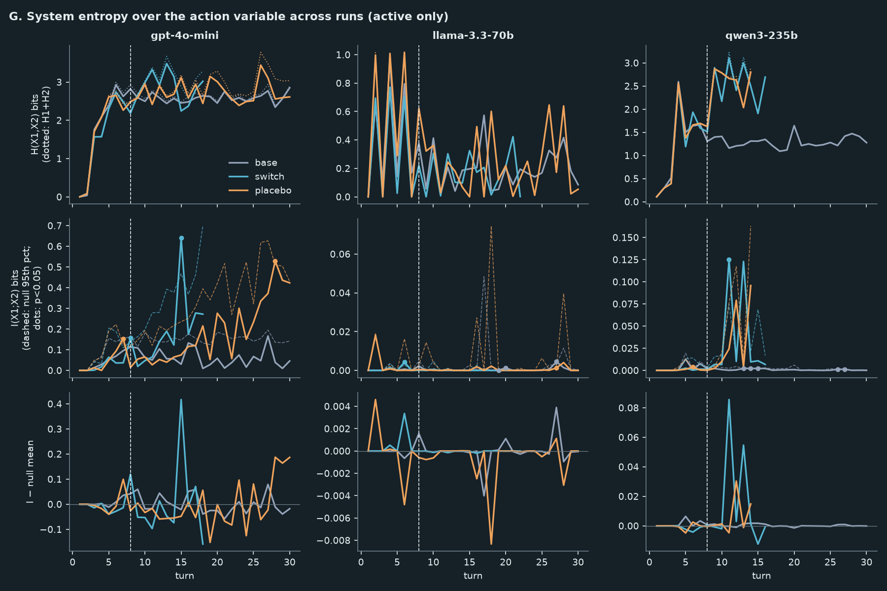